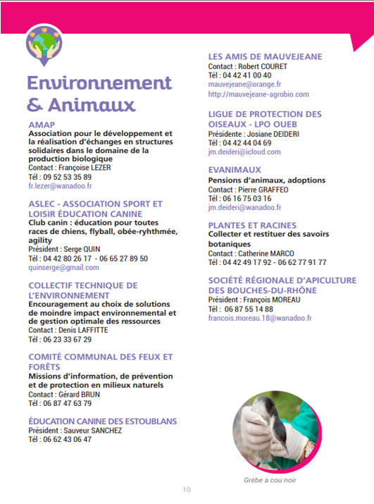

| Population | Superficie | Densité | Code postal | Maire |
| 5800 (en 2018) | 21 km² | 275 hab par km² | 13 920 | Vincent Goyet (2020-2026) |
Un projet est en cours, mené par l’association de Mr LAFFITE « collectif Technique de l’environnement » qui a pour objectif de passer de 2 bornes de recharge à 4 bornes de recharge pour voiture électrique. Ce projet est financé à 1/3 par la mairie, 1/3 par les utilisateurs et le dernier tier par d’autres organismes.

Détailles des association --> À ce jour, aucun plan climat concret n’est énoncé en ce qui concerne le territoire de Saint-Mitre-les-Remparts d’après nos recherches sur internet et notre demande auprès des différents contacts que l’on a pu avoir avec des personnels de la ville que ce soit des institutions comme la mairie ou bien des associations.
La ville d’Istres place l’environnement au premier plan. Son engagement face à l’écologie se traduit par la mise en place de nombreuses mesures renforçant le développement durable.
Cependant, nous avons pu accéder à un document qui stipulait un projet d’aménagement du territoire. Ce ne sont que des projets économiques et sociaux pour la plupart mais certains d’entre eux pourraient faire partie d’un semblant de plan climat c’est pour cela que nous voulons tout de même les notifier dans cette analyse.
De plus, est également dit que le territoire veut respecter la biodiversité avec des aménagements favorisant la place de la nature en ville. Par exemple une idée d’utilisation de parcelles non exploitée qui pourraient se prêter à la culture de plantes aromatiques avait émergé ainsi qu’un pôle d’équipement culturel ayant pour objectif à la sensibilisation et l’information du public sur la filière comme le jardin pédagogique.
Certains acteurs de l’environnement ont mis en place quelques mesures mais malheureusement le territoire de Saint-Mitre-les-Remparts ne possède pas assez de fond pour des actions concrètes.
Ici un graphique de l’endettement de Saint-Mitre-les-Remparts Pour illustrer le manque de fonds pour des actions concrètes